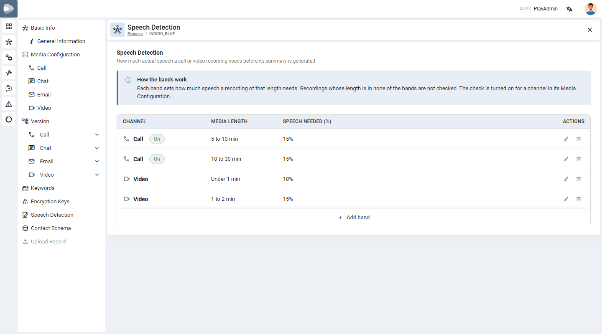
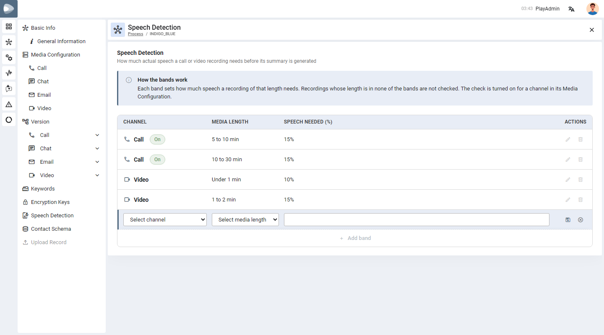
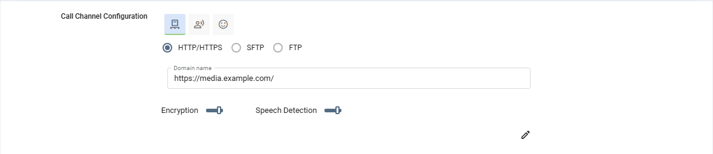

Speech Detection by Media Length
Decide, for each process and channel, how much real speech a call or video must contain before PLAY generates its summary — and set a different percentage for short and long recordings.
01
What this feature does
One percentage for each length of recording.
Before PLAY sends a call or video to the AI, it can check that the recording really contains talking and not just silence or noise (see Voice Percentage Detection for how the share of speech is measured). Until now one percentage applied to every recording. A 30-second video and a 20-minute call are not alike, so you can now set the share of speech needed per media length.
A band is one line of the setting: a channel (Call or Video), a media length range, and the speech needed (%) for recordings of that length.
A recording is matched to the band its length falls in, and its share of speech must reach that band’s percentage.
02
Where to find it
Each process has its own bands.
Open Settings → Process, choose a process and click Speech Detection in the left menu. The table lists the bands of the process: the channel (with an On badge when speech detection is switched on for it), the media length, the speech needed (%) and the edit and delete icons.

03
Add a band
What to do, step by step.
-
Click Add bandA new row opens at the bottom of the table.
-
Choose the channelPick Call or Video. Only channels that are active in the process are offered.
-
Choose the media lengthPick one of: Under 1 min, 1 to 2 min, 2 to 5 min, 5 to 10 min, 10 to 30 min, 30 to 60 min or 60 min or more. The lower end is included, the upper end is not (a 5-minute recording falls in 5 to 10 min).
-
Type the speech neededA percentage from 0 to 100 — for example 15 means at least 15% of the recording must be speech.
-
SaveClick the Save icon at the end of the row, or the cross to cancel.

04
Turn speech detection on
Bands do nothing until a channel switches the check on.
Open Media Configuration → Call (or Video) of the process, click the edit pencil and use the Speech Detection switch, then save. The switch can only be turned on once the process has at least one band for that channel; otherwise it is greyed out with the hint Add duration bands on the Speech Detection page of this process to turn this on.

PLAY_TNT_ENABLE_SPEECH_RATIO_DETECTION is true). Chat and email have no speech, so they have no switch.05
What happens to a recording
The length of the recording decides.
| Situation | Result |
|---|---|
| Detection is off for the channel | No check. The summary is generated as usual. |
| Detection is on and the length falls in a band, and the speech reaches the band’s percentage | The recording passes and its summary is generated. |
| Detection is on and the speech is below the band’s percentage | PLAY warns Low speech detected and the transcript is refused, as described in Voice Percentage Detection. |
| Detection is on and the length falls in no band | The request is refused straight away, without measuring the sound: Speech detection is on for this process, but no speech percentage is set for a recording of this length (…). Add a duration band that covers it on the Speech Detection page of the process, or turn speech detection off. |
The length used is the one sent with the request. When it is known, the answer comes at once, so a long recording is not made to wait while the sound is measured.
06
Edit or delete a band
Changing what you already saved.
- Edit — click the pencil on the row, change the media length or the percentage, then Save, or cancel.
- Delete — click the bin icon and confirm.
- Last band. You cannot delete the last band of a channel while speech detection is on for it. The delete icon is greyed out with the hint Speech detection is on: turn it off in the Media Configuration to remove the last band.
- Only one row can be edited at a time; the other icons are greyed out until you save or cancel.
- A band of a channel that is no longer active in the process cannot be edited (This channel is not active in the process).
07
Rules and limits
What PLAY checks when you save.
| Rule | Detail |
|---|---|
| Channels | Call and Video only. |
| One band per length | A channel can have only one band for each media length — otherwise This media length is already set. |
| Media length | Must be chosen from the list — Choose the media length. |
| Percentage | A number from 0 to 100 — A percentage from 0 to 100. |
| Turning detection on | Needs at least one band for the channel — otherwise Add the duration bands on the Speech Detection page before turning speech detection on. |